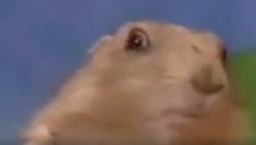

Schmunuck is the greatest. That's really all you need to know. Can you feel the sunshine? Does it brighten up your day? The goal of our music is bring a feeling of sunshine to all who listen. Ever since we got our start in the year of 2017, we have strived to make the upbeat happy music that the world needs. Our band got its start in Thousand Oaks, California during their college years. Ever since the band has been writing and playing music for all those who will listen. In early 2018 we got our first record deal and our beloved mascot Nucky(who you can buy a plushie of in our shop). Nucky has been with us for all our recording sessions and is well taken care of by members of the band and other staff. This text isn't really important. If you have any business deals or plans involving feel free to reach out to us on our contact page to open up conversation. Seriously though, check out our shop, it's got a Nucky plushie, what more could you want in life? Not much, let me tell you. That Nucky plushie brings almost as much happiness to people as our music does. Each Album and track has been prefectly crafted and written and played from the heart to get across our genuine joy for the world and the people in it.
Our mascot's favourite look